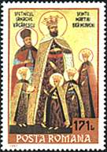
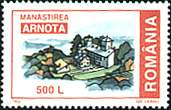
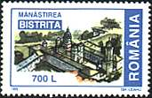
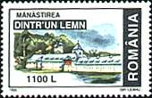
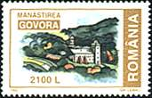
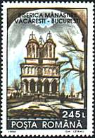
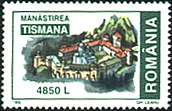
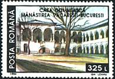
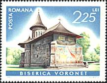
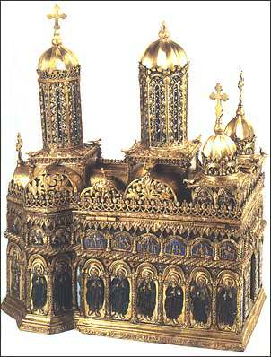

Monasteries and Saints
 |
The National Museum of Art of Romania Art in Monasteries |

Byzantium endured through people and through autonomies, namely through that which, spiritually or politically, had maintained a relative freedom after the conquest of Constantinople. Among the people - exiles, clerics, scholars, merchants, and high officials - the most important were the archons and the princes.
 |
 |
 |
 |
Among the autonomies, the most powerful and the most efficient were Moldavia and Walachia, much more so than the Christian communities on the continent or on the islands, at Athos or in the oriental patriarchies.
 |
 |
 |
 |
The institutions, ideas, aspirations, education, way of life, and the superior type of human realization, everything that represented the grandeur of the world whose defeated descendants remained faithful to it were saved by hierarchs, archons, and Romanians. Due to them one can speak of a Byzantium after Byzantium. Or, as the historian Nicolae Iorga wrote: "There was a time when it appeared that the entire Byzantine, Balkan legacy would be inherited by the Romanian princes who, as the only ones who remained standing among the Christians, showed that they wanted to preserve it and that they were capable to sacrifice themselves for it". (After Virgil Candea, Introduction to Byzantium after Byzantium by Nicolae Iorga, ISBN 973-9432-09-3).
|
In
the Eastern Orthodox service, the kivotos is a vessel used for
keeping the Holy Gifts; usually it looks like a model of the church to
which it belongs. The kivotos shown on the right was presented to
Hurezi monastery by its founder, Prince Constantin Brancoveanu. |

The different stamps displayed above show monasteries and churches from Romania. Please move the mouse pointer over the stamps for more information.
Links: